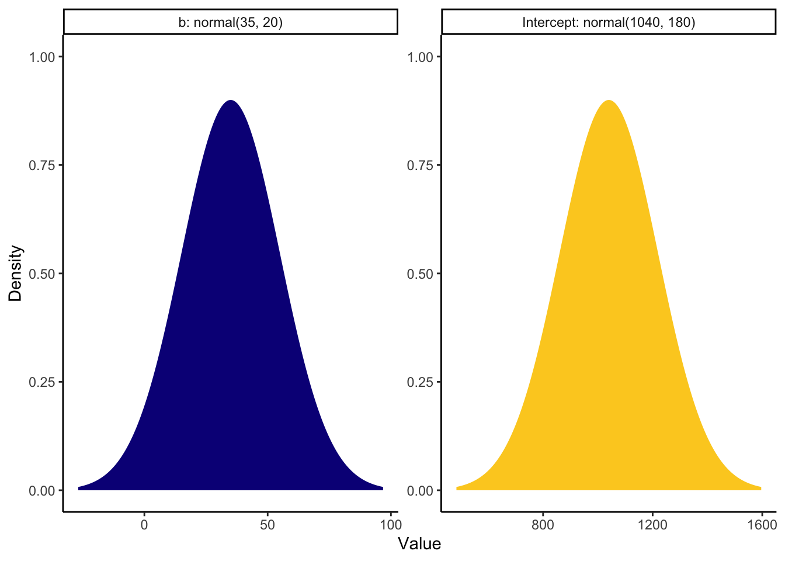
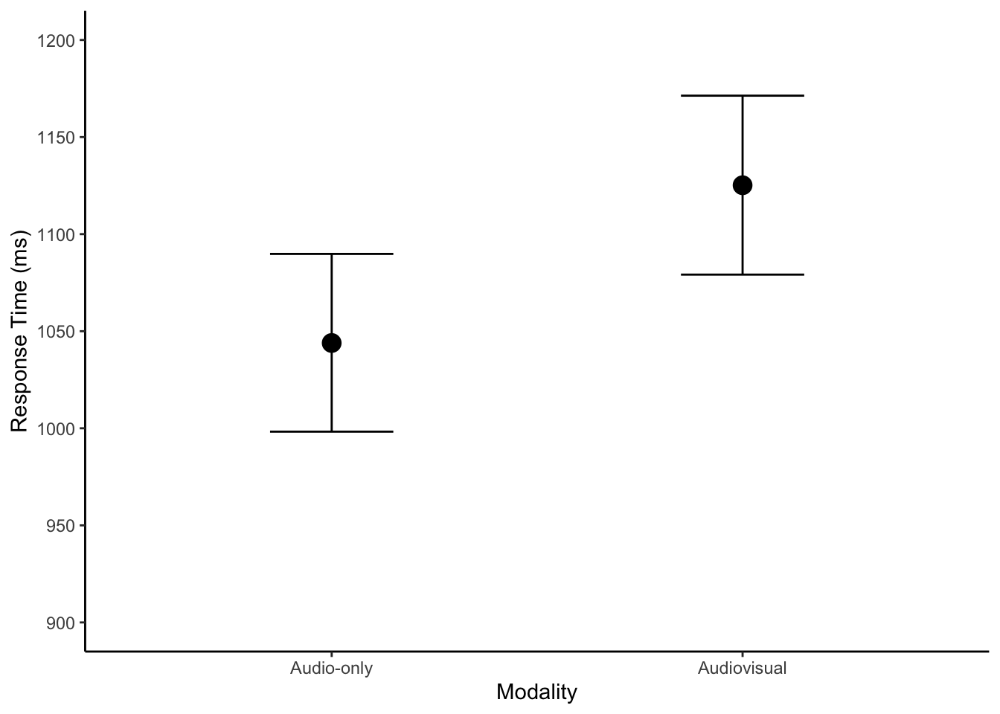

11 Frequentist and Bayesian Mixed Effects Models
In the recordings, James walked through the building blocks of fitting and interpreting mixed effects models, first from a frequentist perspective and then from a Bayesian perspective. The data come from Brown (2021) who developed a tutorial for mixed effects models. Part 1 here uses the
Make sure you have the following packages installed and loaded.
Now we have our packages, we need to read the data from Brown (2021) who report a repeated measures study on speech perception. Participants complete two tasks where they listen to words being spoken while they complete a response time task. The words are presented in two conditions: 1) just being spoken in an auditory condition and 2) being spoken and seeing the speaker in an audiovisual condition. Each participant completes the task for 543 words, split between the two conditions in a different order for each participant. They expected response times to be slower in the audiovisual condition compared to the audio condition due to the interference from listening.
This means we have a repeated measures / within-subjects design. The outcome is response time in milliseconds (ms). The predictor - or fixed effect - is the modality (audio and audiovisual). We will also explore the impact of participants and the word stimuli as random effects.
11.1 Frequentist
In the first section, we will explore how to fit mixed effects models using frequentist statistics and the
11.1.1 Aggregate participants
For demonstration purposes, we are going to start slow with aggregate data and averaging over the words, leaving us with only a mean response time per condition.
11.1.1.1 Standard linear model, no random effects
We can try and fit a standard linear model using mean_RT as the outcome and modality as the predictor.
Call:
lm(formula = mean_RT ~ modality, data = brown_aggregate)
Residuals:
Min 1Q Median 3Q Max
-319.57 -124.34 -24.35 107.35 605.71
Coefficients:
Estimate Std. Error t value Pr(>|t|)
(Intercept) 1044.07 23.89 43.697 <2e-16 ***
modalityAudiovisual 83.16 33.79 2.461 0.0155 *
---
Signif. codes: 0 '***' 0.001 '**' 0.01 '*' 0.05 '.' 0.1 ' ' 1
Residual standard error: 173.9 on 104 degrees of freedom
Multiple R-squared: 0.05503, Adjusted R-squared: 0.04595
F-statistic: 6.057 on 1 and 104 DF, p-value: 0.0155As you will see in upcoming models, the intercept and slope are “accurate” but the standard errors and degrees of freedom are all off. We have 53 participants but 104 degrees of freedom since we are not factoring in they contribute two observations.
11.1.1.2 Random intercept for participants
After the brief demonstration, we can fit our first mixed effects model. We have a new function called lmer() instead of lm(). This time, we have a similar formula to define mean_RT as the outcome and modality is still our main predictor. In a mixed effects model, we refer to this as a fixed effect. The new component is the (1 | PID) which represents our random effect. This is a random intercepts only model, where we are telling R to allow the intercept (the 1 part) vary for each participant (the PID part).
Linear mixed model fit by REML. t-tests use Satterthwaite's method [
lmerModLmerTest]
Formula: mean_RT ~ modality + (1 | PID)
Data: brown_aggregate
REML criterion at convergence: 1305.6
Scaled residuals:
Min 1Q Median 3Q Max
-2.59477 -0.46495 -0.00148 0.37616 2.64062
Random effects:
Groups Name Variance Std.Dev.
PID (Intercept) 26066 161.45
Residual 4192 64.74
Number of obs: 106, groups: PID, 53
Fixed effects:
Estimate Std. Error df t value Pr(>|t|)
(Intercept) 1044.07 23.89 59.70 43.697 < 2e-16 ***
modalityAudiovisual 83.16 12.58 52.00 6.612 2.05e-08 ***
---
Signif. codes: 0 '***' 0.001 '**' 0.01 '*' 0.05 '.' 0.1 ' ' 1
Correlation of Fixed Effects:
(Intr)
modltyAdvsl -0.263The output for a mixed effects model is similar, but we have some new sections. Since we loaded the lmerTest package, we get p-values via the Satterthwaite method. The two key sections are the random effects and fixed effects.
Starting with fixed effects, if you scroll up to the standard linear model, you will see the estimate the the intercept and slope are identical, but the standard error has decreased substantially now we have taken the within-subjects design into consideration.
Under random effects, we accurately code that there are 106 observations but 53 participants by defining the random effect. The standard deviation tells us that we expect the response time to vary by 161ms around the intercept of 1044ms, which relates to the response time towards audio stimuli. We only allowed the intercept to vary in this model, not the slope, so this tells us we fit a constant slope in the model but the intercept for each participant can move up and down.
You can see this clearer by accessing coefficient values which will print the random effects for each participant.
$PID
(Intercept) modalityAudiovisual
301 978.4349 83.16029
302 1006.3888 83.16029
303 882.0067 83.16029
304 1167.7371 83.16029
306 1019.0060 83.16029
307 1063.8531 83.16029
308 1230.6380 83.16029
309 781.2698 83.16029
310 1176.8249 83.16029
311 990.6904 83.16029
312 1137.5894 83.16029
313 1084.9800 83.16029
314 1088.1276 83.16029
315 858.5082 83.16029
316 1336.9827 83.16029
318 940.9711 83.16029
319 1026.4853 83.16029
320 999.6693 83.16029
321 1052.4284 83.16029
324 1056.8015 83.16029
325 819.4797 83.16029
326 1028.3805 83.16029
328 1244.5444 83.16029
329 1008.8456 83.16029
331 1417.8641 83.16029
333 1589.9694 83.16029
334 955.2190 83.16029
335 1153.5106 83.16029
337 924.7565 83.16029
338 841.0854 83.16029
340 1180.4104 83.16029
341 898.8564 83.16029
342 1214.5150 83.16029
343 1049.2312 83.16029
344 1035.4302 83.16029
346 883.4886 83.16029
348 823.7689 83.16029
349 935.0100 83.16029
350 1172.5127 83.16029
351 1176.7303 83.16029
352 811.5272 83.16029
353 1132.9344 83.16029
354 1106.1102 83.16029
355 1185.4441 83.16029
356 1062.5312 83.16029
357 918.9947 83.16029
358 945.6114 83.16029
359 1028.0600 83.16029
360 1042.4988 83.16029
361 1008.7396 83.16029
362 947.0871 83.16029
363 910.8909 83.16029
364 1002.4373 83.16029
attr(,"class")
[1] "coef.mer"The intercept value changes for each participant as some are faster and some are slower on average. But then the slope estimate is identical for each participant.
You can also see this visually using the sjPlot package and plot_model() function.
Zero on this plot represents the fixed effect intercept of 1044ms. Each participant then represents a deviation from this as the random effect. Participants in red are below the intercept (i.e., they respond faster), whereas those in blue are above the intercept (i.e., they respond slower).
11.1.2 Trial-level data
Now the function is a little less of a mystery, we can step things up and use mixed effects models to their full capability on trial-level data. If you explore the data, you can see the difference. In the aggregate data, participants contribute two rows:
| PID | modality | mean_RT |
|---|---|---|
| 301 | Audio-only | 1027.4106 |
| 301 | Audiovisual | 1002.0642 |
| 302 | Audio-only | 1047.3455 |
| 302 | Audiovisual | 1042.5323 |
| 303 | Audio-only | 882.6735 |
| 303 | Audiovisual | 938.4381 |
Whereas in the full data, participants contribute 543 rows, one for each word:
| PID | RT | modality | stim |
|---|---|---|---|
| 301 | 1024 | Audio-only | gown |
| 301 | 838 | Audio-only | might |
| 301 | 1060 | Audio-only | fern |
| 301 | 882 | Audio-only | vane |
| 301 | 971 | Audio-only | pup |
| 301 | 1064 | Audio-only | rise |
This means we can model the variability within both participants and different words, both of which we expect to sampled from wider distributions of participants and words.
11.1.2.1 Random intercepts only
As we work towards fitting the “maximal” model, a useful starting point for conducting a likelihood ratio test later is fitting the random effects with no fixed effects. We are only modelling the variability of responses across participants and words.
Linear mixed model fit by REML. t-tests use Satterthwaite's method [
lmerModLmerTest]
Formula: RT ~ (1 | PID) + (1 | stim)
Data: brown_data
REML criterion at convergence: 303405.8
Scaled residuals:
Min 1Q Median 3Q Max
-3.4561 -0.7030 -0.0292 0.5919 4.7565
Random effects:
Groups Name Variance Std.Dev.
stim (Intercept) 330.6 18.18
PID (Intercept) 28075.5 167.56
Residual 68943.6 262.57
Number of obs: 21679, groups: stim, 543; PID, 53
Fixed effects:
Estimate Std. Error df t value Pr(>|t|)
(Intercept) 1086.42 23.10 52.14 47.03 <2e-16 ***
---
Signif. codes: 0 '***' 0.001 '**' 0.01 '*' 0.05 '.' 0.1 ' ' 1The intercept represents the average across all trials - around 1086ms - by ignoring the fixed effect of modality.
11.1.2.2 Modality and random intercepts
In the next model, we now add our fixed effect of modality.
brown_model3 <- lmer(RT ~ modality + (1 | PID) + (1 | stim),
data = brown_data)
summary(brown_model3)Linear mixed model fit by REML. t-tests use Satterthwaite's method [
lmerModLmerTest]
Formula: RT ~ modality + (1 | PID) + (1 | stim)
Data: brown_data
REML criterion at convergence: 302861.5
Scaled residuals:
Min 1Q Median 3Q Max
-3.3572 -0.6949 -0.0205 0.5814 4.9120
Random effects:
Groups Name Variance Std.Dev.
stim (Intercept) 360.2 18.98
PID (Intercept) 28065.7 167.53
Residual 67215.3 259.26
Number of obs: 21679, groups: stim, 543; PID, 53
Fixed effects:
Estimate Std. Error df t value Pr(>|t|)
(Intercept) 1044.449 23.164 52.781 45.09 <2e-16 ***
modalityAudiovisual 82.525 3.529 21433.526 23.38 <2e-16 ***
---
Signif. codes: 0 '***' 0.001 '**' 0.01 '*' 0.05 '.' 0.1 ' ' 1
Correlation of Fixed Effects:
(Intr)
modltyAdvsl -0.078The estimates are pretty close to our aggregate model but now we are modelling the full study design from different sources of variables. The intercept for the audio modality is 1044ms and we expect the audiovisual modality to have 83ms slower responses on average.
If you look at random effects, we have two key standard deviations to explore. We estimate participants’ intercepts to vary by around 168ms but only around 19ms for word stimuli. This means the responses of different participants are more variable than different stimuli.
As before, we can visualise the random effects to see the broad pattern of variability. Just keep in mind, when we have a huge number of stimuli like the words, the plot can be difficult to distinguish different elements.
11.1.2.3 Modality, random intercepts, and slopes
The final model we will fit is the “maximal” model for our design, where we allow both the intercept and slope to vary. You can see the different syntax where a random intercept has the format (1 | random_effect), whereas random intercept and slopes has the format (1 + fixed_effect | random_effect).
brown_model4 <- lmer(RT ~ modality + (1 + modality | PID) + (1 + modality | stim),
data = brown_data)
summary(brown_model4)Linear mixed model fit by REML. t-tests use Satterthwaite's method [
lmerModLmerTest]
Formula: RT ~ modality + (1 + modality | PID) + (1 + modality | stim)
Data: brown_data
REML criterion at convergence: 302385.7
Scaled residuals:
Min 1Q Median 3Q Max
-3.3646 -0.6964 -0.0140 0.5886 5.0003
Random effects:
Groups Name Variance Std.Dev. Corr
stim (Intercept) 304.0 17.44
modalityAudiovisual 216.6 14.72 0.16
PID (Intercept) 28554.1 168.98
modalityAudiovisual 7709.1 87.80 -0.17
Residual 65258.8 255.46
Number of obs: 21679, groups: stim, 543; PID, 53
Fixed effects:
Estimate Std. Error df t value Pr(>|t|)
(Intercept) 1044.14 23.36 52.13 44.703 < 2e-16 ***
modalityAudiovisual 83.18 12.57 52.10 6.615 2.02e-08 ***
---
Signif. codes: 0 '***' 0.001 '**' 0.01 '*' 0.05 '.' 0.1 ' ' 1
Correlation of Fixed Effects:
(Intr)
modltyAdvsl -0.178The random effects structure now has four key rows. We can look at the standard deviation around the intercept for word stimuli (17ms) and it’s slope (15ms). Likewise, we can explore the intercept for participants (169ms) and it’s slope (88ms). We are now allowing both the response time for audio stimuli to vary for each participant and stimulus (intercepts) and the difference to audiovisual stimuli (slopes).
For a completely wild graph, you can now see four panels for the random intercept and slope for each random effect. The same interpretation applies where 0 represents the fixed effect value, and values above and below are deviations from this for each level of the random effect.
11.1.2.4 Model comparison
The final step here is considering model comparison. We can ask questions such as “does modality have an effect on response times?” and “is this more complicated model worthwhile?”.
By fitting the three models to our trial-level data, we can pass them to the anova() function. This is known as a likelihood ratio test.
refitting model(s) with ML (instead of REML)| npar | AIC | BIC | logLik | deviance | Chisq | Df | Pr(>Chisq) | |
|---|---|---|---|---|---|---|---|---|
| brown_model2 | 4 | 303421.9 | 303453.9 | -151707.0 | 303413.9 | NA | NA | NA |
| brown_model3 | 5 | 302884.0 | 302923.9 | -151437.0 | 302874.0 | 539.9420 | 1 | 0 |
| brown_model4 | 9 | 302418.7 | 302490.5 | -151200.3 | 302400.7 | 473.3161 | 4 | 0 |
You can see the warning about it refitting the models using maximum likelihood instead of restricted maximum likelihood. We could do this manually by adding the argument REML = FALSE to the lmer() function.
We can see the difference between model 2 (random effects only) and model 3 (modality as a fixed effect and random intercepts) is statistically significant and we have a lower AIC value. Modality does have an effect on response times. The difference between model 3 and model 4 (random intercepts and slopes) is also significant. Even though model 4 is the most complex (9 parameters to estimate), it is a better fitting model relative to it’s complexity.
11.2 Bayesian
Now we have fitted the models using
As an initial warning, these models are going to take 15-30 minutes to run on your computer. I have provided the model objects for you to work with quickly, but they are quite computationally expensive to run yourself. This is also why I have focused on the random intercept only model, purely for pragmatic reasons. It takes up to an hour to fit a random intercept and slope model for these data. The formula structure is identical though, so are you are welcome to try and fit the “maximal” model yourself.
11.2.1 Default priors
We will start by fitting a model with default priors to explore the main difference in using
We can pass that to the brm() function without specifying priors to update to our posterior probability distributions. You can download the model objects to speed things up, or it will save the model objects to your computer in a “Models” sub-folder if you do not have it saved.
brown_default_priors <- brm(formula = brown_intercept_model,
family = gaussian(),
data = brown_data,
file = "Models/brown_default_priors")
summary(brown_default_priors) Family: gaussian
Links: mu = identity; sigma = identity
Formula: RT ~ modality + (1 | PID) + (1 | stim)
Data: brown_data (Number of observations: 21679)
Draws: 4 chains, each with iter = 2000; warmup = 1000; thin = 1;
total post-warmup draws = 4000
Multilevel Hyperparameters:
~PID (Number of levels: 53)
Estimate Est.Error l-95% CI u-95% CI Rhat Bulk_ESS Tail_ESS
sd(Intercept) 169.56 16.59 141.56 205.40 1.00 634 1322
~stim (Number of levels: 543)
Estimate Est.Error l-95% CI u-95% CI Rhat Bulk_ESS Tail_ESS
sd(Intercept) 18.22 3.72 9.25 24.62 1.00 942 670
Regression Coefficients:
Estimate Est.Error l-95% CI u-95% CI Rhat Bulk_ESS Tail_ESS
Intercept 1040.69 22.97 996.04 1087.17 1.01 263 604
modalityAudiovisual 82.52 3.57 75.46 89.66 1.00 10771 2504
Further Distributional Parameters:
Estimate Est.Error l-95% CI u-95% CI Rhat Bulk_ESS Tail_ESS
sigma 259.30 1.25 256.86 261.75 1.00 6120 2854
Draws were sampled using sampling(NUTS). For each parameter, Bulk_ESS
and Tail_ESS are effective sample size measures, and Rhat is the potential
scale reduction factor on split chains (at convergence, Rhat = 1).The organisation of
Our estimates are similar to the frequentist equivalents but there are some potential problems we have not encountered in previous Bayesian models, given we are now working with more complex models. The R-hat values are all good but several effect sample size values are far too small in the low hundreds.
We will not explore everything for this default prior model, but we can explore the posteriors and trace plots. The intercept seems to be the most problematic following the low effective sample size values, with the plot here looking particularly choppy.
The final thing we will look at here is the posterior predictive check to make sure assuming normality is a reasonable choice.
Brown (2021) notes in the tutorial that the response time data have been edited to be more suitable for teaching contexts. Presumably this is making them look a little more normal or the responses are just much slower here, as a normal distribution suits the data quite well. Normally, they have characteristic skew where you need to consider something like a gamma distribution.
11.2.2 Informed priors
The model we will explore in a little more detail is setting informed priors for the parameters we can set reasonable expectations on. Using our descriptive model and data, we can see what
| prior | class | coef | group | resp | dpar | nlpar | lb | ub | source |
|---|---|---|---|---|---|---|---|---|---|
| b | default | ||||||||
| b | modalityAudiovisual | default | |||||||
| student_t(3, 1057, 289.1) | Intercept | default | |||||||
| student_t(3, 0, 289.1) | sd | 0 | default | ||||||
| sd | PID | default | |||||||
| sd | Intercept | PID | default | ||||||
| sd | stim | default | |||||||
| sd | Intercept | stim | default | ||||||
| student_t(3, 0, 289.1) | sigma | 0 | default |
In a mixed effects model, we have more parameters than we have set so far. We have our standard intercept, slope, and sigma. We also have standard deviation parameters for our two random effects. It looks busier than it really is as
For our model, we can use Brown and Strand (2019), a previous article from the tutorial author where they reported a similar study. It is very rare to see people reporting values for sigma or standard deviations, so we are just going to focus on setting priors for the intercept and slope. We do not have enough subject knowledge to set the other priors.
In Brown and Strand (2019), they report descriptive statistics for the mean response time to audio stimuli between 998ms and 1089ms, with an SD between 161 and 203. We can use this information to set a prior for the intercept. There are other predictors in the models they fit, but modality ranged between 21ms and 48ms slower for audiovisual stimuli. The larger effects were statistically significant and the smaller effects were non-significant, so we can bake in a wide range of uncertainty to expect positive values for the slope, but include some negative values for the non-signicant effects.
brown_priors <- set_prior("normal(35, 20)", class = "b") +
set_prior("normal(1040, 180)", class = "Intercept")
brown_priors %>%
parse_dist() %>% # Function from tidybayes/ggdist to turn prior into a dataframe
mutate(prior_label = paste0(class, ": ", prior)) %>% # add the class and prior
ggplot(aes(y = 0, dist = .dist, args = .args, fill = prior_label)) + # Fill in details from prior and add fill
stat_slab(normalize = "panels") + # ggdist layer to visualise distributions
scale_fill_viridis_d(option = "plasma", end = 0.9) + # Add colour scheme
guides(fill = "none") + # Remove legend for fill
facet_wrap(~prior_label, scales = "free") + # Split into a different panel for each prior
labs(x = "Value", y = "Density") +
theme_classic()
Now we have our priors, we can refit the model. Given the effect sample size values, I also increased the number of iterations. This will produce 8000 post-warmup draws instead of 4000 to try and increase the effective sample size.
brown_informed_priors <- brm(formula = brown_intercept_model,
prior = brown_priors,
family = gaussian(),
data = brown_data,
iter = 4000,
file = "Models/brown_informed_priors")
summary(brown_informed_priors) Family: gaussian
Links: mu = identity; sigma = identity
Formula: RT ~ modality + (1 | PID) + (1 | stim)
Data: brown_data (Number of observations: 21679)
Draws: 4 chains, each with iter = 4000; warmup = 2000; thin = 1;
total post-warmup draws = 8000
Multilevel Hyperparameters:
~PID (Number of levels: 53)
Estimate Est.Error l-95% CI u-95% CI Rhat Bulk_ESS Tail_ESS
sd(Intercept) 171.76 16.76 143.16 208.65 1.00 1173 2384
~stim (Number of levels: 543)
Estimate Est.Error l-95% CI u-95% CI Rhat Bulk_ESS Tail_ESS
sd(Intercept) 18.22 3.77 9.57 24.70 1.00 1713 1266
Regression Coefficients:
Estimate Est.Error l-95% CI u-95% CI Rhat Bulk_ESS Tail_ESS
Intercept 1043.64 23.27 998.27 1089.81 1.01 387 928
modalityAudiovisual 81.08 3.45 74.28 87.85 1.00 21349 5464
Further Distributional Parameters:
Estimate Est.Error l-95% CI u-95% CI Rhat Bulk_ESS Tail_ESS
sigma 259.32 1.25 256.87 261.79 1.00 16344 5110
Draws were sampled using sampling(NUTS). For each parameter, Bulk_ESS
and Tail_ESS are effective sample size measures, and Rhat is the potential
scale reduction factor on split chains (at convergence, Rhat = 1).Setting priors and increasing the number of iterations has helped the model, but it is still quite ideal. Really, you would want to keep on tweaking the model until the effect sample size was in the high hundreds for the intercept, but it is improved for all the other parameters. Low effective sample size points to potentially unreliable parameter estimates but we will explore this one in the interests of time given the estimates are so close to the frequentist versions.
The posteriors and trace plots look similar, with the intercept just looking a little choppy.
One helpful type of plot is superimposing the prior with the probability of direction, to look at the consistency between the choice of prior and the posterior. If there is a mismatch, it does not automatically mean there is a problem, but it at least prompts you to reflect and ask questions of your model choices.
Here, we can see the slope estimate is firmly positive with quite a narrow posterior compared to the prior we set. We allowed a wide range given the previous study, so the data have been the dominant force here.
If we wanted to plot the model predictions and help communicate our findings, we can take the conditional effects plot and tidy things up a little.
conditional_plot <- conditional_effects(brown_informed_priors)
plot(conditional_plot,
plot = FALSE)[[1]] + #I don't know why you need this, but it doesn't work without
theme_classic() +
scale_y_continuous(limits = c(900, 1200),
breaks = seq(900, 1200, 50)) +
labs(x = "Modality",
y = "Response Time (ms)")
There is not anything different to the descriptive model, but we can run the posterior predictive check just to follow the process.